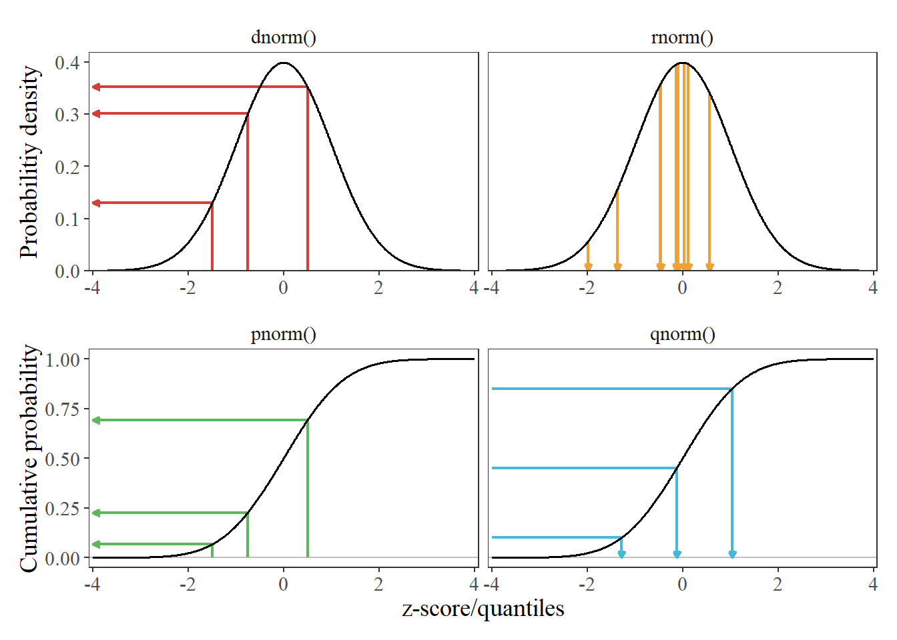

Distribution Manipulation Functions in Python¶
Common Functionality¶
The typycal funcions to manipulate distributions are:
Function |
What it does |
|---|---|
dnorm(x, mean, sd) |
Evaluate the PDF at x (x=mean, sd=standard deviation) |
pnorm(q, mean, sd) |
Evaluate the CDF at q (x=mean, sd=standard deviation) |
qnorm(p, mean, sd) |
Evaluate the quantile at p (x=mean, sd=standard deviation) |
rnorm(n, mean, sd) |
Generate n pseudo-random values from distribution . |

import scipy.stats as stats
rv_dnorm = stats.norm.pdf(0.6, loc=0, scale=1)
rv_pnorm = stats.norm.cdf(0.6, loc=0, scale=1)
rv_qnorm = stats.norm.ppf(0.6, loc=0, scale=1)
rv_rnorm = stats.norm.rvs(size=10, loc=0, scale=1)
print("rv_dnorm:", rv_dnorm)
print("rv_pnorm:", rv_pnorm)
print("rv_qnorm:", rv_qnorm)
print("rv_rnorm:", rv_rnorm)
rv_dnorm: 0.33322460289179967
rv_pnorm: 0.7257468822499265
rv_qnorm: 0.2533471031357997
rv_rnorm: [ 1.1283218 -1.74773693 0.84768859 1.64381917 0.93644392 0.44734188
0.98964665 0.30904492 -1.33169617 -1.27432876]
rv = stats.norm(loc=0, scale=1)
rv_dnorm = rv.pdf(0.6)
rv_pnorm = rv.cdf(0.6)
rv_qnorm = rv.ppf(0.6)
rv_rnorm = rv.rvs(size=10)
print("rv_dnorm:", rv_dnorm)
print("rv_pnorm:", rv_pnorm)
print("rv_qnorm:", rv_qnorm)
print("rv_rnorm:", rv_rnorm)
rv_dnorm: 0.33322460289179967
rv_pnorm: 0.7257468822499265
rv_qnorm: 0.2533471031357997
rv_rnorm: [-1.05355766 -0.02031839 1.32085629 0.22702692 -1.05958595 1.02475703
1.17004048 1.40150775 -0.56311758 -0.43007924]
Common Distributions¶
We are going to see how to do this in python for a superset of distributions which ar available in scipy.stats and listed in the scipy.stats documentation.
Binomial(n, p)
Poisson(\(\lambda\))
Exponential(\(\lambda\))
Gamma(\(\alpha\), \(\beta\))
Uniform(a, b)
Beta(\(\alpha\), \(\beta\))
Normal(\(\mu\), \(\sigma\)2)
Student t(\(\nu\))
Below we will compute some values using scipy.stats functions.
Example 1¶
Suppose X ∼ Binomial(5, 0.6). Evaluate the CDF at x=1, or equivalently P(X ≤ 1) ≈ 0.087. Verify that the quantile value returned at this CDF is the same as our original value of x.
stats.binom.cdf(1, n=5, p=0.6)
0.08704
stats.binom.ppf(0.08704, n=5, p=0.6)
1.0
Example 2¶
Suppose Y ∼ Exp(1). Verify that the range 0.105 < Y ≤ 2.303 contains the middle 80% of the probability mass.
stats.expon.ppf([0.1, 0.9], scale=1)
array([0.10536052, 2.30258509])
Exercise 4¶
Let Y ∼ Gamma(2, 1/3). Find P(0.5 < Y < 1.5).
rv = stats.gamma(a=2, scale=3)
rv.cdf(1.5) - rv.cdf(0.5)
0.07776602280343295
Exercise 5¶
Let Z ∼ N(0, 1). Find z such that P(Z < z) = 0.975.
stats.norm.ppf(0.975, loc=0, scale=1)
1.959963984540054
Exercise 6¶
Let Z ∼ N(0, 1). Find P(−1.96 < Z < 1.96).
rv = stats.norm(loc=0, scale=1)
rv.cdf(1.96) - rv.cdf(-1.96)
0.950004209703559
Exercise 7¶
Let Z ∼ N(0, 1). Find z such that P(−z < Z < z) = 0.90.
z_range = stats.norm.ppf([0.05, 0.95], loc=0, scale=1)
print(z_range)
print("z:", z_range[1])
[-1.64485363 1.64485363]
z: 1.6448536269514722